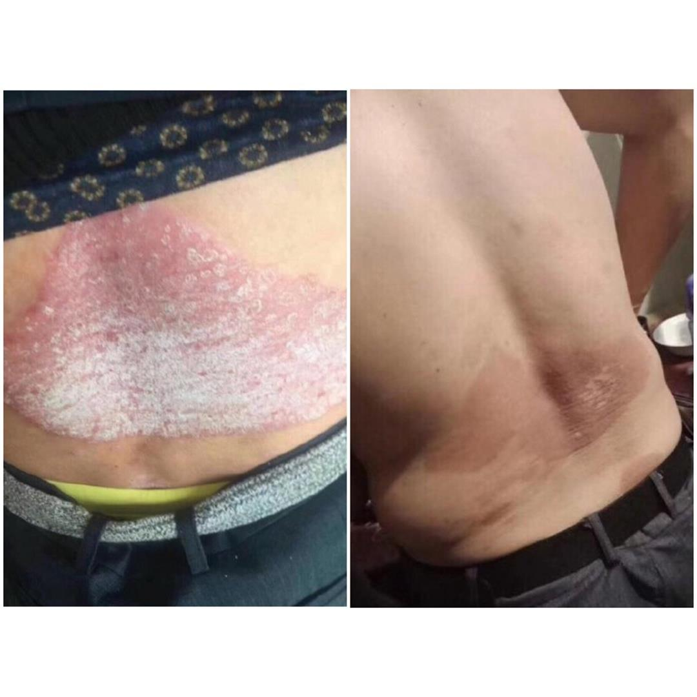
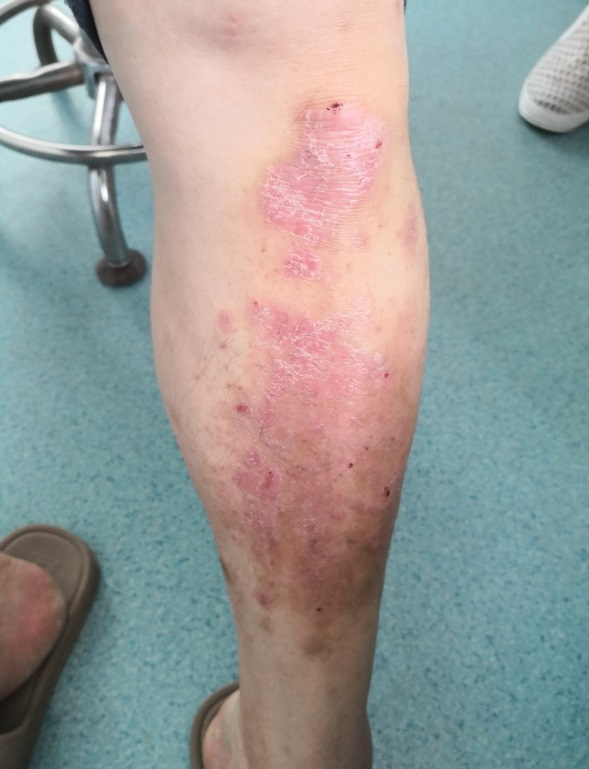
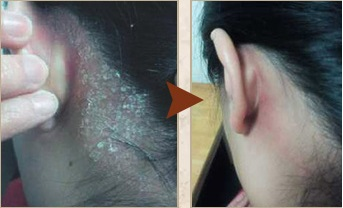
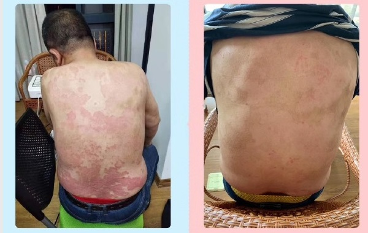
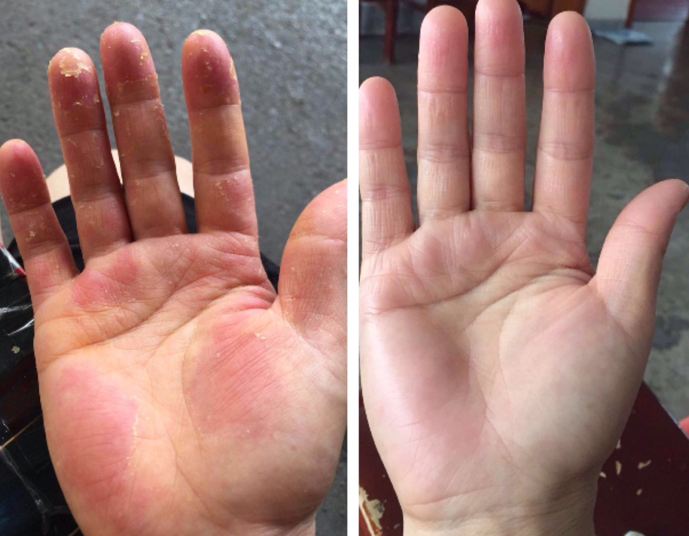
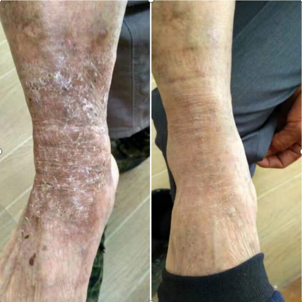
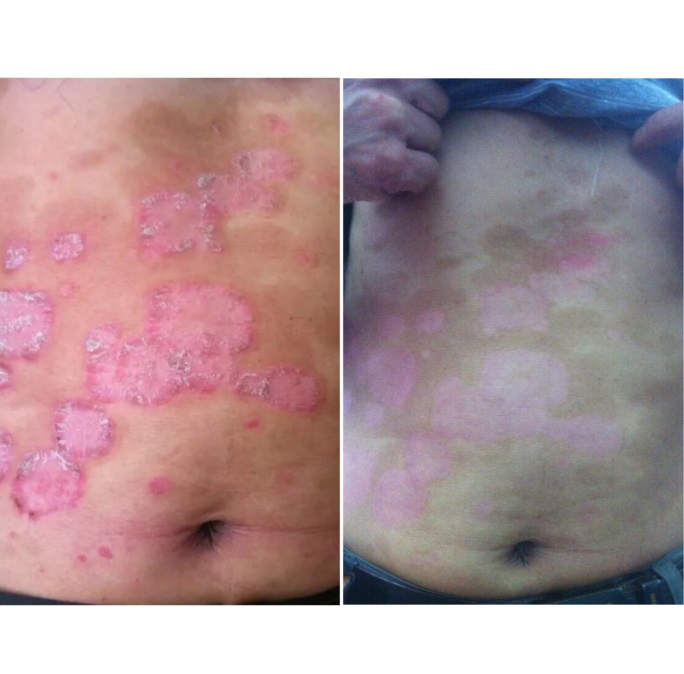
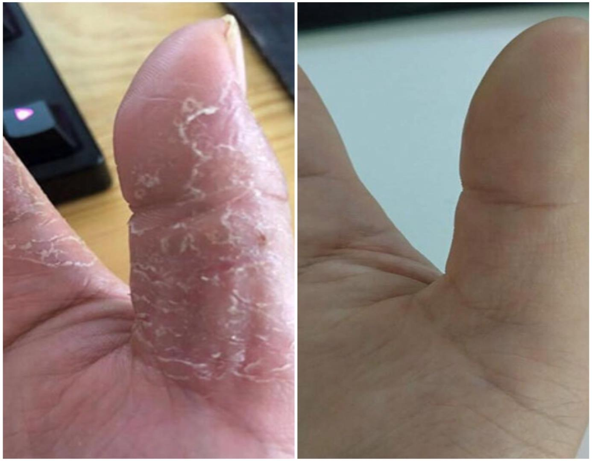

我之前和你一样，也是皮藓，常年都有。结痂，都很厚的，痒，抓了烂啊，烂的一片一片的，发病的地方会掉下银白色的皮屑。长在大腿上蔓延到小腿上，都不敢穿短裤了了，严重影响我的自信心。一开始去各个地方看，也有好转的时候，一停没多长时间就又会发作了，试过各种土方偏方，什么艾草，炉甘石，紫草油，后来听说醋可以，谁知道醋有腐蚀性，结果越来越严重，反反复复8年的时间了。本来都想放弃了，还好那时已经结了婚，有了小孩，妻子没有离开我，但是感觉到妻子的嫌弃，影响了夫妻生活，一直在看也没有看好。后来我老婆说，我皮藓那么严重，传给孩子了怎么办。想想也是，心里害怕，就又开始找人看。后来是老师向我介绍的这位老师(微信号 )，通过老师的方法我才治好了这多年的皮藓，现在这么久了还没有复发的现象，现在想想真的是太幸运了，非常感谢陈老师，有皮肤问题的朋友建议去咨询一下陈老师。
回复@真情、
回复@青衣菀素
可以的，你加了问问吧，加个微信挺方便的，她朋友圈还有好多图片和相关知识，并且平时遇到皮肤问题随时可以问她呢，很感谢老师呢。
?2019-01-28 09:36:20
我也是找的陈老师，不过我的不是皮癣，我的在屁股靠近腹股沟这边长了反反复复的皮炎湿疹，也是在陈老师这边只治好的，目前大半年过去了，还没有复发过，非常感谢陈老师，由于隐私部位我就不发图片了，感谢！大家放心去治，给自己点信心！
我堂叔腰部顽固性银屑病牛皮癣也好几年了，看着都觉得难受，也是在这个老师的调理下，解决了他多年的问题，现在他开朗多了！！！有这方面的问题的朋友可以加老师的微信，强力推荐

2019-01-30 15:25:13
我想问一下我的脚部也开始脱皮，一块一块的，很痒，是不是牛皮癣?好怕，想知道该怎么办，现在还不是很大，是这个微信号（ ）对吧？还有现在右臂有点小点

回复@红颜有梦，泪无痕
微信对的，你加老师微信问一下吧，我昨天加的老师，聊了好长时间，老师人非常好，很耐心解答
了我的问题，你可以加老师微信问问你的情况。
2019-02-17 16:41:43
一开始抱着试试看的态度加了老师微信，后来聊着聊着就很信任老师的能力了，过来谢谢楼主的分享~
回复@离人难拥
是的呢，我用后就介绍给我一个朋友用的，当时她用了好多激素药，都不管用，我就给她介绍的这个纯植物的，也恢复的很好，感觉自己还做了件好事，哈哈。。倾情推荐（ ）
2019-02-25 19:19:08
我也是长牛皮藓老不好，我用了很多方法都没管用，老师真的那么厉害吗？
回复@长腿欧巴
主要是我用过太多方法了都没好，不知道这个老师行不行
回复@顾我安稳
我去~那好吧，你自己不去尝试永远也不会好，其实我也是看了好多地方没办法，多亏了认识了老师，我给你看看我老公的恢复情况，这么久了都没有复发现象（ ）
2019-03-05 11:51:25
这个老师的方法怎么样啊？你现在什么情况了？我在给我爸找治疗牛皮藓的方法，每次看到他挠的那么狠我都看不下去了，作为子女也是很心疼的。还有我最近大腿那里老是痒还发红小疙瘩不知道是不是也是湿疹啊或什么来的
回复@东忘西不忘你
你真孝顺，我的头藓已经好半年没事了，你加下老师微信吧，让她给你判断一下，并且她朋友圈有好多图片什么的你也可以看看，我很感激老师呢，我给你看一下我的恢复情况

2019-03-11 19:20:06
咱家爸在医院诊断劈裂性湿疹，嘴角和下巴周围的皮肤都开裂了，去过很多医院治疗效果都不理想，网上找到老师用了2个周期后康复了，好东西给大家分享一下，希望帮到更多的人，湿疹也玩意，太挠人了。

2019-03-12 19:25:36
我认识这个老师，我手藓好几年了看了很多地方没治好也是老师给治好的，我是慢性湿疹，拖的时间久了手背手面都很严重了，给大家看一下我之前给老师的反馈图！

2019-04-28 15:22:13
看见你们晒图我也晒一下，真心非常感谢各位，我爷脚藓多年，每年脚背都会脱皮，瘙痒，增厚变硬如牛皮一样，慢慢变大穿鞋又痒又疼的要死，用了各位推荐的老师的方法5天了，屑慢慢开始消掉也不痒了...希望有类似情况的朋友也能尽快康复。

2019-05-02 16:28:33
患上牛皮癣已经好久好久，久到具体是哪一年发病我都忘记了。在没有遇上老师之前，我一直认为这个病是治不好的，因为医生也是怎么说的，直到我遇到了固肤堂，让我彻底改变了这个想法。如果说这世上真有神医，那这个荣誉当属固肤堂老师，因为是他们治好了我这个病

2019-05-12 15:28:33
我的屁股有藓有段时间了，终于让我找到一个有用的帖子了，咨询一下应该是免费的吧。怎么加老师微信呢?
回复@仰着头倔强骄傲
当然是免费的，这是微信号（ ）你长按微信号，复制到微信添加朋友就可以咨询了。
2019-05-28 18:20:06
确实很专业，我的角化型手癣多年，用这个方法15天左右已经康复，发图给你看看吧

2019-06-12 15:32:13
昨天跟咱家喝酒，一大桌子菜啥都吃，也没见他怎么样，治愈后的他开心多了，真心觉得是不错的产品，良心产业。诺言必行
安徽芜湖，给老人家点个赞，健康才是重要的，医院还是不要去了，非常感谢老师，强烈推荐老师的微信给大家（ ）
2019-06-20 19:10:06
我是从事饮食行业的，患上牛皮藓后各种药膏搽过不少就是一直反反复复，发痒时挠着就舒服点，停下来后钻心的痒，无法入睡，整个人像神经病一样，甚至抓狂啊，有幸得到朋友的介绍用了老师的膏后，康复几个月了，真心感谢老师。由于隐私只能给大家分享部分患处
2019-06-21 17:22:43
得皮肤困扰的真不少，从得了皮藓就再也没有痛快吃过饭！吃点海鲜辣椒就反复，吃个牛羊肉心里都怕，对于一名吃货真的太痛苦了。楼主是个好人，太感谢了！
2019-06-26 16:23:19
 陈志远皮肤科 主任
陈志远皮肤科 主任 赵曼文皮肤科 医师
赵曼文皮肤科 医师